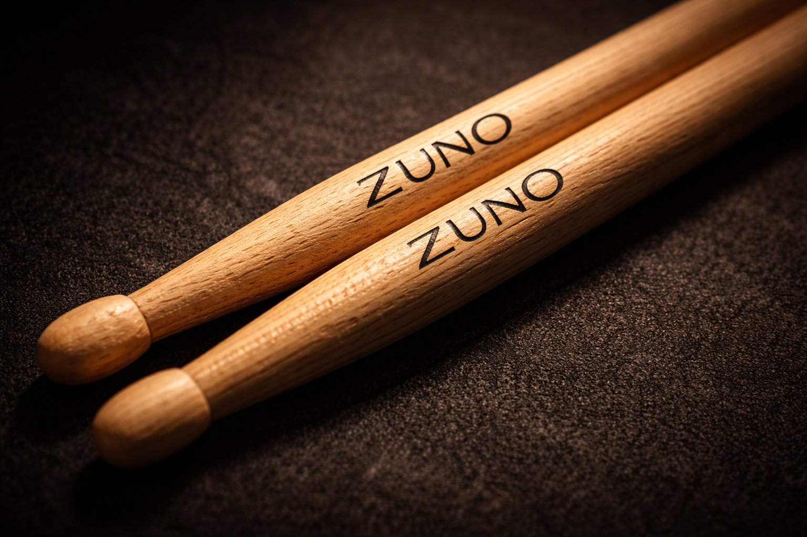

Conheça Zuno
Conheça Zuno

Feito para durar. Projetado para soar.
Nossos Produtos


Por que Zuno?
Qualidade Absurda
Cada peça passa por controle rigoroso antes de sair da linha. Nenhum detalhe é ignorado.
Precisão de Fábrica
Tolerâncias mínimas, acabamento máximo. Feito pra encaixar e soar como deveria.
Durabilidade
Materiais selecionados para aguentar o uso intenso sem perder resposta ou definição.
Sem Concessões
Não existe versão "boa o suficiente" aqui. Ou é Zuno, ou não é.

Ride ZUNO 24”
Definição clara, resposta precisa e controle absoluto em cada batida. Projetados para músicos que não aceitam limitações, os pratos ZUNO entregam consistência, projeção e presença em qualquer dinâmica.
Ver DetalhesTecnologia
Material define tudo. Por isso escolhemos com obsessão.
B20 Bronze
A liga B20 é o padrão ouro da indústria — 80% cobre, 20% estanho. Essa composição entrega um som rico, complexo e com sustain longo. Os pratos Zuno são fundidos nessa liga e passam por martelamento manual para afinar as frequências e garantir resposta consistente em qualquer dinâmica.
Carvalho Americano
Densidade alta, fibra reta e resposta consistente. O carvalho americano aguenta o uso intenso sem perder o equilíbrio natural da baqueta, entregando controle do pp ao ff.

O que os músicos dizem

Marcos
"A definição é absurda. Cada batida responde exatamente como eu toco, sem perder controle."

Bia
"O equilíbrio é perfeito. Consigo extrair dinâmica sem esforço, do mais leve ao mais intenso."

Fernando
"Durabilidade e consistência que dá confiança. Não preciso me adaptar ao prato, ele responde a mim."
Sobre Zuno
A Zuno surgiu de uma insatisfação simples: pratos que prometiam muito e entregavam pouco. Fundada por bateristas que viviam essa frustração dia a dia, a marca nasceu com um objetivo claro, criar instrumentos que respondessem de verdade, sem margem pra erro.
Aqui, cada decisão começa pelo som. Materiais selecionados, tolerâncias mínimas, acabamento que você sente antes mesmo de tocar. Não existe versão "boa o suficiente" dentro da Zuno, ou está certo, ou volta pra prancheta. Esse é o padrão, e ele não negocia.
Nossa TecnologiaEleve o nivel do seu som
Controle, definição e resposta precisa em qualquer dinâmica.
Explorar Produtos